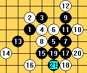
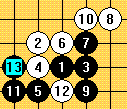
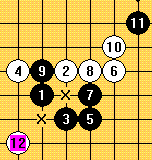
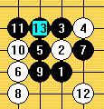

一子双杀(禁)解析
#1 一子双杀(禁)解析作者：连珠战神 发表时间：2007-7-30 20:17:41
一子双杀
所谓"一子双杀"是指对局中出现一方有两个叫杀点(一般是有两个冲四活三点),而对方无法同时防守的情形.对局中,人们往往发现,并非每一步棋都必须是先手(特指活三或冲四)才能赢棋.有时候,某一步棋本身并不是先手,但是,有了这步棋,就出现了两个胜点或两种获胜着法,迫使对方来不及防守或无法防守而获胜,这就是"一子双杀".可以说,"一子双杀"的技巧是五子棋技术的一层新阶梯,如果掌握了这种技巧,就表明了你的五子棋技术已经有一定的水平。
一子双禁
所谓"一子双禁"是指白方利用禁手的规则,通过一着妙棋使黑方陷入同时面临两个禁手点的困境,黑方将无法同时避免两个禁手点的情形.从另一种意义上说,这是白棋的一子双杀。
一杀一禁
所谓"一杀一禁"是指对局中出现白方有两个取胜点,其中一个为冲四活三叫杀,另一个为抓禁手取胜的棋形。
一子多杀
所谓"一子多杀"是指对局中出现一方有两个以上(如三个,四个或五个)的叫杀点,而对方无法同时防守的情形,其实质也是一子双杀。
VCT
所谓VCT就是连续活三取胜,它是英文Victory by Continuous Threes的缩写.连续活三,就不仅是包括跳三,也包括连三和眠三.但是,每一着活三都是先手,都迫使对方防守,最后形成取胜棋形。
VCF
所谓VCF是英文Victory of Continuous Four的缩写,即以连续不断的冲四取得胜利.VCF是五子棋残局和各种排局中一个非常重要的取胜技术.所以,学习并掌握VCF技术是对于提高五子棋爱好者的棋艺水平来说是十分重要的.五子棋排局是人为排列出来的局面习题。 它虽然不是实战对局的产物,但是,其主题的构思往往接近于实战残局;而且,绝大多数是由字,数,形等图案构成的VCF练习题,给人以美的享受及解谜的魅力.精彩的排局和字谜往往构思精到深奥,变化引人入胜.拟制排局和拆解排局有助于锻炼全局观念和残局中攻击点的选择,培养思考和想像能力,有助于提高棋艺水平。
无先手预见性的一子双VCT杀（不一定连续，下同）

G8和L7的VCT
无先手的一子双VCF杀

需要提醒的是此局有反四，所以失败，不过可以胜。
另外我有一个推论，由于一子最多可以联系横竖斜四个方向，加上冲四活三杀必须占用两个方向，所以双杀时候，“活三”共线才可以找到共防，不共线就无，四共线只有白棋可以，但是实战走不出来，因此，要找到共防必须“活三”共线；一子多杀其实就是一子双杀，必定找不到共防和反四，如果不能自己绝对先手胜的话，必败。有兴趣的话可以自己证明一下（提示用三角形和四边形证明，三角形中一子可以防住两边，另外一边没有四三，所以一子双VCF杀必须4和3占用掉4个方向；一子多杀为什么没有共防和反四呢？ 呵呵.....)
另外我写了个“三角流”的理论欢迎大家PP
无先手的一子VCT+VCF杀（配图无）
无先手的一子双禁

有先手的一子双杀

有先手的一子双禁（配图无，我在联众执白活三时曾经抓过两头禁，可惜忘记了）
#2 Re:一子双杀(禁)解析作者：5子~学遥 发表时间：2007-8-2 22:51:14
好东西!那我就笑纳了啊!^_^#3 Re:一子双杀(禁)解析作者：wuzi 发表时间：2007-8-6 13:05:23
好是好，可是总觉得这人气太低了，为什么呀，难道喜欢五子棋的人真的就那么少
#4 Re:一子双杀(禁)解析作者：湮落梓涵 发表时间：2007-8-29 8:47:39
呵呵,这几种杀我都下过.#5 Re:一子双杀(禁)解析作者：若水无华 发表时间：2007-8-29 13:48:12
我只有在碰巧的情况下才走过这种棋.
#6 Re:一子双杀(禁)解析作者：【弈缘】狂人 发表时间：2007-8-29 18:18:15
楼上的兄弟说人气低 我来捧场#7 Re:一子双杀(禁)解析作者：来客沙丝 发表时间：2009-3-23 21:53:39
一知半解，学习学习。#8 Re:一子双杀(禁)解析作者：海湾浪琴 发表时间：2011-1-28 19:15:49
=======上图对应的爱五子棋谱代码如下，以便你拆解：========
h8h9h10i10g9f8i9f7g8f9f10i7g10f5f6g11
======================================================最后一个图不对。
白棋跳个四，防上